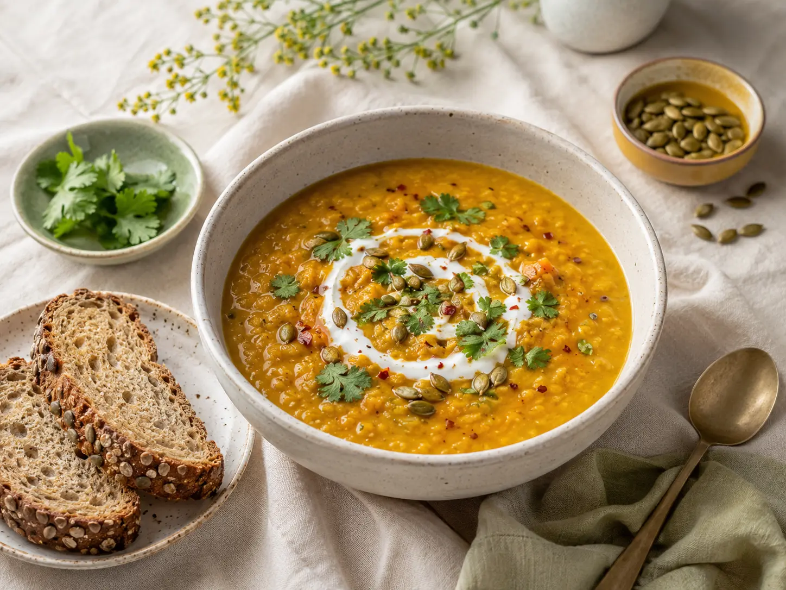

Who it is for
Home cooks deciding what to make with limited time and household planners trying to avoid checking several disconnected lists.
Connected data / Everyday utility
Nutriva
A connected pantry, meal plan and grocery list that explains why an ingredient appears and lets people correct the input.
Try the working prototype ↗Explore the screen collection ↗Lentils ✓
Olive oil ✓
Carrots + ADD TO LIST

A meal recommendation becomes less useful when the pantry record is wrong. A household needs to correct what is at home and understand how that changes dinner options and shopping.
Home cooks deciding what to make with limited time and household planners trying to avoid checking several disconnected lists.
Reduce repeated planning decisions by connecting a small, understandable inventory to meal choices and missing ingredients.
Self-directed concept with directional comparison in the original brief. No formal household study, nutrition research, waste measurement or grocery-spend experiment was conducted.
Three sample meals and ingredient-name matching. No quantity accounting, freshness detection, nutrition calculation, allergen verification or purchase integration.
Read the archived project notes ↗Meal cards show which listed ingredients are already at home and which are missing.
A mysterious smart score would be visually compact but harder to trust or correct.
Name matching is transparent, while quantity and freshness remain out of scope.
Removing a pantry item updates dependent views and provides an undo control.
A confirmation modal prevents mistakes but slows every routine update.
A visible reversible action supports quick maintenance without pretending mistakes will not occur.
Each grocery item names the planned meal or meals that require it.
A bare list is shorter but makes it harder to resolve a surprising ingredient.
A second text line earns its space by explaining a dependency.
03 / THE WORKING PRODUCT
These are responsive HTML, CSS and JavaScript interfaces. Open the prototype to follow a task, or use the screen collection to inspect individual states.
DESIGNED & IMPLEMENTED
| Uncertain inventory | Keep suggestions separate until the user confirms them. |
|---|---|
| Pantry edit | Update related suggestions and missing items. |
| Accidental removal | Offer undo in the pantry view. |
| No planned meals | Explain how to start a grocery list. |
| Nothing missing | State that listed names are covered; quantities still need checking. |
Use native checkboxes with full-row labels and clear focus. Put ingredient provenance in readable text rather than hover tooltips. Avoid relying on food photos or green/red states to communicate pantry coverage.
These are design provisions, not a conformance certification. Real-device, assistive-technology and user testing remain necessary.
A kitchen notebook with clear working lists: leafy green navigation, butter-yellow notes, candid meal photography and visible pantry-fit explanations.
#294b31#fafbf6#243a28#f5db54DM Sans for hierarchy and controls with a friendly rounded companion in the existing system. Body 16–18 px; recipe names 28–36 px; ingredient list labels 18 px. Numerical fit ratios remain compact.
Ingredient checklists, recipe cards and simple kitchen labels. Photography represents the actual sample meals; green communicates the product identity, not an unsupported health claim.
Pantry corrections, ranked meal suggestions, a flexible plan and a derived grocery list share state. Every missing item names the planned meals that require it. A removed pantry ingredient has an undo path.
160 ms button and selection feedback. Update results immediately after a pantry edit; announce the change without animating or reordering while someone is typing.
Inspect this system in practice ↗FROM PRODUCT TO PRINT
A useful kitchen inventory sheet and an ingredient-led meal-planning campaign. Every graphic refers to the same practical behavior: check, plan, cook.
This focused prototype shows understandable dependencies and recovery. Whether the model reduces planning effort requires realistic household testing.
No conversion, adoption, revenue or usability improvement is claimed for this concept.
Explore the collection by role